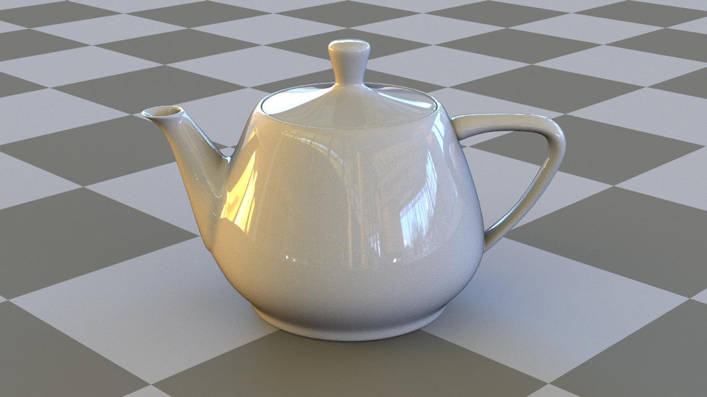
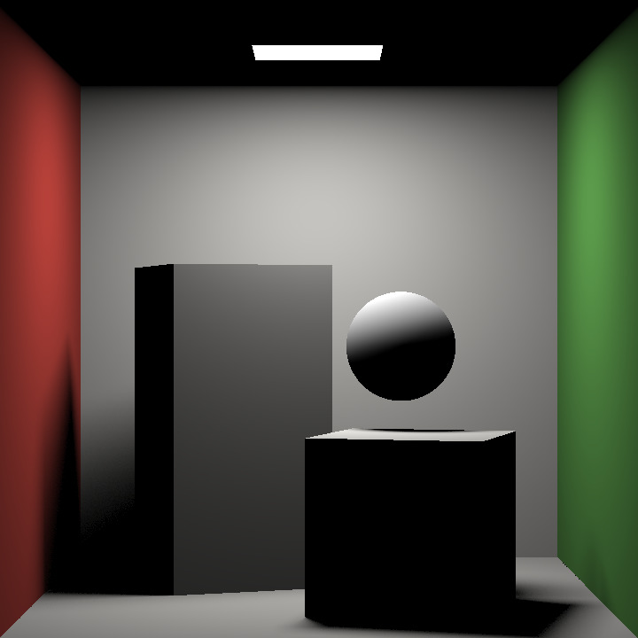

**Supplemental Material**
# Image comparison
With this supplemental material, for different scenes you will be able to compare
- Our method "progressive". In this setting, we optimized the sampler for a value N that is always larger than the maximal sample count, so that it can be used in a progressive renderer. In these examples, we set N=256.
- Our method "target SPP". In this setting, we optimized for a value N that is exactly the sample count used to compute the image. This setting achieves a blue-noise error distribution slightly better than the progressive setting but cannot be used in a progressive renderer.
- Random scrambling. We use the same Owen-scrambled Sobol sequence as in our method with a random per-pixel scrambling. The error is statistically the same as in our methods but it is distributed as a white noise in screen space, which makes it visually worse.
- [Georgiev and Fajardo 2016]. We apply their dithering mask to the same Owen-scrambled Sobol sequence as in our method. The error is distributed as a blue noise only for low sample counts. In some cases, the renders exhibit more noise than the three other methods as the sample count increases. This is because the toroidal shifts break the stratification of the sequence and lower its convergence.
The four methods have the same performance.
Note that due to the 50MB restriction for supplementary files we could only showcase 5 scenes and had to compress the images.
 |
 |
 |
| Boxed3 |
Teapot |
Cornell Box |